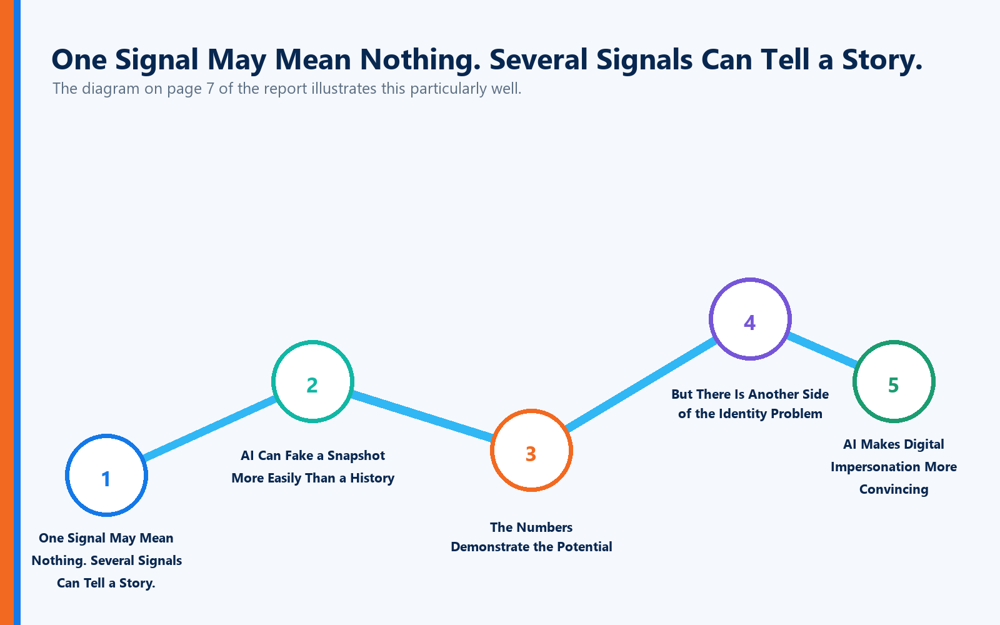
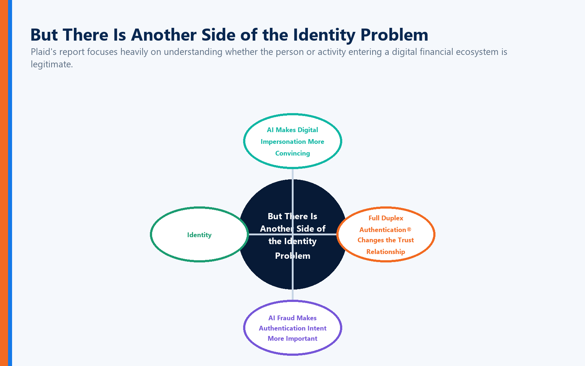
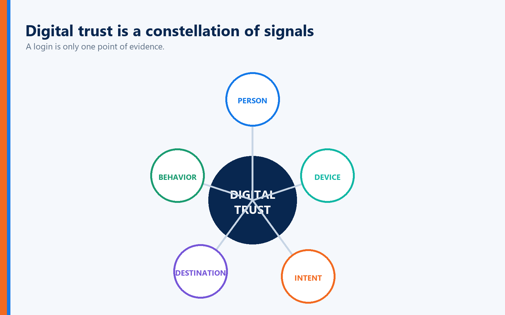
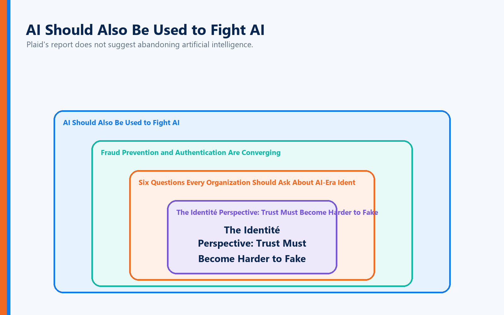

For decades, cybersecurity and fraud prevention have operated on a relatively straightforward premise:
Collect enough information about a person, and you can determine whether that person is who they claim to be.
Name.
Address.
Date of birth.
Social Security number.
Security questions.
Government identification.
Device information.
Facial recognition.
Biometrics.
Each generation of identity technology improved upon the one before it.
Then artificial intelligence changed the equation.
A recent Plaid report titled The New Identity Crisis: Rethinking Fraud in the AI Era makes a compelling argument that many of the signals organizations have historically relied upon to establish identity are becoming easier to obtain, manipulate, synthesize or impersonate.
The report projects global fraud losses could reach $40 billion within the next few years, driven in significant part by AI-enabled attacks. It also argues that static identity attributes, knowledge-based questions and even some biometric checks can now be spoofed, purchased or synthesized.
That creates a fundamental cybersecurity problem.
If AI can convincingly reproduce the information we use to prove identity, then we need to reconsider what proof of identity actually means.
And perhaps an even bigger question:
Are we authenticating information about a person, or are we authenticating the person?
Every Technology Revolution Has Changed Identity
One of the most useful observations in the Plaid report is that identity verification has repeatedly evolved in response to technological change.
The timeline on page 3 illustrates this progression particularly well.
During the dot-com boom, organizations relied heavily on credit bureau information such as names, addresses and dates of birth.
As the internet expanded, knowledge-based authentication became common. Users were asked questions based on personal history.
The gig economy accelerated adoption of government ID document verification.
The cryptocurrency boom increased demand for liveness verification to establish that a real person was physically present during enrollment.
Then large-scale social media and digital platforms helped drive behavioral analytics, including device behavior and typing patterns.
Each innovation addressed the problem of its time.
But criminals adapted.
Now we're entering the AI era.
And AI attacks several of these trust signals simultaneously.
AI Is Industrializing Impersonation
Fraudsters have always impersonated people.
AI changes the economics of doing it.
The Plaid report identifies four areas where AI and modern fraud techniques are weakening traditional identity controls:
Widespread availability of personal data. Data breaches and criminal marketplaces have made enormous quantities of personal information accessible.
Synthetic identities. AI can help create convincing personas, including identities that may combine legitimate and fabricated information.
Deepfakes. AI-generated audio, video and images increasingly challenge conventional document and biometric verification methods.
Location and device spoofing. Criminals can disguise their actual operating environment and undermine controls that depend heavily on device or location information.
Individually, none of these developments is trivial.
Combined, they create an identity problem of a completely different magnitude.
A criminal no longer necessarily needs to steal your entire identity.
They may be able to manufacture enough of it.
Knowing Something About You Is Not the Same as Being You
This is one reason knowledge-based authentication has become increasingly problematic.
Consider some traditional security questions:
What was your mother's maiden name?
What street did you grow up on?
What was the name of your first school?
What is your favorite sports team?
What year were you born?
Twenty years ago, some of that information may have been relatively difficult for a stranger to discover.
Today, much of it can potentially be found through social media, public records, breached databases or data brokers.
AI makes the process even easier by helping criminals gather, organize and interpret enormous quantities of information.
The problem is fundamental:
Knowledge about a person isn't proof that you are that person.
That distinction should influence the future of authentication.
AI Changes the Transaction Too
The Plaid report goes beyond conventional fraud and raises another fascinating issue:
Agentic commerce.
AI agents are beginning to perform actions on behalf of people.
Imagine telling an AI assistant:
"Find the best nonstop flight to Miami next Friday for under $500 and purchase it."
Now several identity and authorization questions emerge.
Is the AI agent legitimately acting for you?
Did you authorize the purchase?
Was the agent authorized to spend that amount?
Was it authorized to purchase from that merchant?
Was the transaction modified?
Does the transaction match your intent?
The report argues that organizations increasingly need to understand not only who they are transacting with, but also how the transaction is occurring.
That is an important distinction.
In an AI-driven economy, identity alone may no longer be enough.
We increasingly need:
Identity + Authorization + Intent + Context.
Authentication Cannot Be a Single Moment Anymore
Traditional authentication often works like this:
User logs in.
Identity is verified.
Access is granted.
Done.
But the Plaid report argues that AI-driven fraud exposes the limitations of identity systems designed around point-in-time verification instead of continuous assurance. It argues that organizations need to protect accounts throughout the customer lifecycle and evaluate interactions and transactions for signs of account takeover and fraud.
This is critical.
Suppose someone legitimately authenticates at 9:00 a.m.
At 9:17 a.m., the account attempts an unusual transaction.
At 9:21 a.m., money is transferred to a new destination.
At 9:25 a.m., security information changes.
At 9:31 a.m., another large transaction occurs.
Should the authentication decision made at 9:00 automatically establish trust for everything that follows?
Probably not.
Trust should have context.
The Digital Financial Footprint
Plaid proposes an interesting answer to part of this problem: the digital financial footprint.
Instead of depending primarily on static information about an individual, organizations can examine how that person actually behaves and transacts over time.
According to the report, this can incorporate signals such as:
Device and IP information
Previous interactions with applications and services
Transaction patterns
Movement of money between accounts
Merchant relationships
Connections among accounts
Changes in transaction velocity
Relationships across financial platforms
The idea is compelling.
A fraudulent identity can potentially reproduce your name.
It can reproduce your address.
AI might reproduce your face or voice.
But reproducing years of legitimate behavioral relationships across an ecosystem is considerably more difficult.
One Signal May Mean Nothing. Several Signals Can Tell a Story.

The diagram on page 7 of the report illustrates this particularly well.
Imagine someone opening a new financial application.
The applicant passes the identity verification process.
From that application's perspective, everything looks legitimate.
But a broader network view reveals something different.
The same phone number was recently associated with another financial service.
A connected device was previously associated with promotional abuse.
A linked bank account has rapidly moved between multiple fintech applications.
None of those signals alone necessarily proves fraud.
Together, however, they can create a very different risk profile.
This demonstrates an important cybersecurity principle:
Context changes the meaning of identity.
AI Can Fake a Snapshot More Easily Than a History
This may be one of the most important conclusions we can draw from the Plaid report.
Traditional identity verification frequently examines a snapshot.
Does the name match?
Does the ID match?
Does the face match?
Does the address match?
Does the device appear legitimate?
AI is becoming extraordinarily good at creating convincing snapshots.
But a long-term behavioral footprint is different.
It contains relationships.
Patterns.
History.
Consistency.
Transactions.
Connections.
That helps explain why Plaid argues that cross-institutional network intelligence can provide a more resilient signal in the AI era.
The future of identity security may therefore depend increasingly on combining strong authentication with contextual and behavioral evidence.
The Numbers Demonstrate the Potential
Plaid provides two particularly interesting case studies on page 10.
In one example involving first-party fraud, applicants successfully passed identity checks and onboarding requirements but later defaulted or abused credit.
According to the report, applying targeted additional verification to only 5% of users could have surfaced 40% of previously undetected first-party fraud.
In another case involving accounts that had already passed sophisticated KYC and transaction-monitoring controls, Plaid reports that additional identity checks applied to only one in ten users could have caught 47% of the fraud studied.
That illustrates something security professionals sometimes overlook.
Better security doesn't necessarily require creating more friction for everyone.
Apply stronger controls where risk warrants them.
That can potentially improve security while preserving a better experience for legitimate customers.
But There Is Another Side of the Identity Problem

Plaid's report focuses heavily on understanding whether the person or activity entering a digital financial ecosystem is legitimate.
That's essential.
But there is another identity involved in almost every digital transaction:
The destination.
The bank.
The website.
The application.
The merchant.
The authentication portal.
The financial institution.
We spend enormous resources trying to determine whether the user is legitimate.
But users also need to know whether the destination they're interacting with is legitimate.
That becomes increasingly important in the AI era.
AI Makes Digital Impersonation More Convincing
Consider what generative AI can already produce.
Convincing logos.
Corporate language.
Emails.
Images.
Customer-support conversations.
Web content.
Voice simulations.
Video.
Fraudulent websites can be designed to closely resemble legitimate organizations.
A criminal can create a lookalike domain and direct the victim to a page that appears nearly identical to their bank, employer, healthcare provider or cloud service.
The victim may then voluntarily authenticate.
From the victim's perspective, they did everything correctly.
They entered the correct information.
They followed the instructions.
They believed they were communicating with the legitimate organization.
The problem wasn't necessarily failure to authenticate the user.
The problem was failure to authenticate the destination.
Full Duplex Authentication® Changes the Trust Relationship

This is where Identité's patented Full Duplex Authentication® provides an important additional layer to the identity discussion.
Conventional authentication primarily asks:
"Are you the legitimate user?"
Full Duplex Authentication® adds another question:
"Is this the legitimate destination?"
Both parties participate in establishing trust.
The user authenticates.
The legitimate destination authenticates.
That creates mutual authentication.
An imposter website may successfully duplicate the visual appearance of a legitimate organization.
It may copy the logo.
It may copy the page design.
It may imitate the language.
It may register a deceptively similar domain.
But copying what an organization looks like is different from establishing that it is that organization.
This distinction becomes increasingly valuable as AI makes visual and conversational impersonation easier.
AI Fraud Makes Authentication Intent More Important
The Plaid report repeatedly emphasizes context and behavioral patterns.
Authentication itself should incorporate context too.
One particularly important question is:
Did the legitimate user actually initiate this authentication request?
Traditional push-based MFA can sometimes condition users to respond reflexively.
A notification appears.
Approve?
Deny?
Attackers can exploit this behavior through MFA fatigue or push bombing.
Identité takes a more contextual approach.
During authentication, the user can see a message asking:
"Did you request this authentication session?"
On the same screen, Identité can also present an image and three-digit number associated with the authentication interaction.
The goal is to encourage the user to understand what they're approving rather than simply reacting to a notification.
That establishes something increasingly important:
Intent.
Identity + Device + Intent + Destination + Behavior
The Plaid report's broader argument points toward a much richer model of digital trust.
Instead of relying on one signal, organizations should combine multiple independent forms of evidence.
For example:
Identity
Are you the legitimate person?
Device
Are you using an authorized or trusted device?
Intent
Did you initiate this authentication or transaction?
Destination
Are you interacting with the legitimate organization?
Behavior
Does the activity make sense given your established relationships and patterns?
No single one of these should necessarily carry the entire security burden.
Together, however, they can create a much stronger trust model.
Decentralized Biometrics Matter in the AI Era
The Plaid report specifically notes that even some biometric checks can face challenges from AI-generated content and deepfake technology.
That doesn't mean biometrics are obsolete.
It means biometric architecture matters.
Identité uses a decentralized biometric model in which biometric verification occurs on the user's trusted device.
The biometric data does not need to leave the user's device or reside in a centralized Identité biometric database for matching.
The user's biometric stays on the user's device.
This has an important security benefit.
Centralized databases create centralized targets.
And biometric information deserves particular protection because it isn't equivalent to a password.
If your password is compromised, you change it.
You cannot simply change your fingerprint.
PasswordFree® for SaaS Authentication
For SaaS implementations, Identité offers PasswordFree®.
PasswordFree® is our SaaS passwordless authentication solution and is designed around capabilities including:
Passwordless authentication
Patented Full Duplex Authentication®
Mutual authentication
Trusted-device authentication
Decentralized biometric verification
Authentication intent and context
Emergency PIN Authentication
Secure Backup & Restore
Compatible third-party authentication options
The objective isn't simply to make authentication easier.
It is to reduce dependence on reusable credentials while establishing stronger confidence in the parties participating in the authentication relationship.
NoPass™ for Enterprise and Regulated Environments
For organizations requiring deeper infrastructure integration and deployment control, Identité offers NoPass™, our PaaS solution powered by patented Full Duplex Authentication®.
NoPass™ can be deployed on premises or in the cloud and supports enterprise environments involving:
Microsoft Active Directory
Microsoft Entra ID
Microsoft 365 / Office 365
Microsoft Azure
This can be particularly important for financial institutions, healthcare organizations, government agencies and other highly regulated enterprises.
Banks in particular often prefer on-premises deployments because they are reluctant to place customer or other sensitive information in cloud environments.
With NoPass™, the organization can retain greater control over the authentication infrastructure while still gaining passwordless and mutual authentication capabilities.
AI Should Also Be Used to Fight AI

Plaid's report does not suggest abandoning artificial intelligence.
Quite the opposite.
On page 11, the report recommends using AI to fight AI.
Machine learning can help identify subtle fraud patterns that static rules and manual review may miss. AI-powered analytical tools can also accelerate investigations and help security teams identify patterns across large datasets.
But there is an important qualification.
AI is only as useful as the signals feeding it.
Plaid argues that combining AI with trusted, consumer-permissioned banking information and cross-institutional network intelligence can help organizations move beyond point-in-time verification and make more precise risk decisions.
That is an important principle far beyond financial services.
AI should strengthen trustworthy signals.
It shouldn't replace the need for them.
Fraud Prevention and Authentication Are Converging
Historically, organizations often treated authentication and fraud prevention as separate disciplines.
Authentication asked:
"Can this person log in?"
Fraud prevention asked:
"Is what they're doing suspicious?"
Those questions are increasingly becoming interconnected.
A person can successfully authenticate and still conduct a fraudulent transaction.
An attacker can potentially compromise an authenticated session.
A legitimate customer can be manipulated into authorizing something they didn't fully understand.
An AI agent may conduct a transaction on someone's behalf.
A user may authenticate to a fraudulent destination.
This means organizations increasingly need to evaluate the entire relationship:
Who is involved?
What device is involved?
What is being requested?
Was it intended?
Who is on the other side?
Does the behavior make sense?
Should additional authentication be required?
That is a far more sophisticated security model than simply:
Password accepted. Access granted.
Six Questions Every Organization Should Ask About AI-Era Identity
The Plaid report makes it clear that yesterday's identity controls cannot simply be assumed to remain effective indefinitely.
Security and fraud leaders should therefore ask:
Are we relying too heavily on static identity information that criminals can obtain or synthesize?
Can our authentication architecture withstand increasingly convincing AI-generated impersonation?
Do we evaluate identity only at login, or throughout high-risk interactions and transactions?
Can we recognize abnormal behavior without unnecessarily inconveniencing legitimate users?
Do we establish user intent before approving sensitive authentication or transactions?
Are we authenticating both sides of the digital relationship, or only the user?
That final question deserves far more attention.
Because AI isn't only changing our ability to imitate people.
It's changing our ability to imitate organizations too.
The Identité Perspective: Trust Must Become Harder to Fake
Plaid's Rethinking Fraud in the AI Era reaches an important conclusion.
Traditional identity signals are becoming less reliable when viewed in isolation, while contextual information, behavioral patterns and network intelligence can provide stronger evidence of legitimacy over time.
We believe authentication should evolve according to a complementary principle:
The stronger AI becomes at manufacturing appearances, the less security should depend on appearances.
A password can be stolen.
Personal information can be purchased.
An identification document can potentially be manipulated.
A face or voice can increasingly be synthesized.
A website can be copied.
An email can be generated.
A security conversation can be convincingly impersonated.
So digital trust must increasingly be established through multiple independent relationships and signals.
With Identité, the biometric can help establish:
"I am the authorized user."
The trusted device participates in establishing:
"This is the authorized device."
Contextual authentication asks:
"Did I initiate this authentication session?"
The image and three-digit number provide additional authentication context.
Patented Full Duplex Authentication® addresses:
"Is this the legitimate destination?"
And behavioral and network intelligence can help organizations ask:
"Does what is happening make sense?"
Put those ideas together and a stronger model begins to emerge:
Identity + Device + Intent + Destination + Behavior = Stronger Digital Trust
AI is making fraud faster.
It's making impersonation cheaper.
It's making synthetic identities more convincing.
And it's making many traditional signals easier to reproduce.
The answer cannot simply be to ask users for more information that AI and criminals can eventually reproduce.
We need to establish trust using signals, relationships and authentication mechanisms that are fundamentally harder to fake.
Because in the AI era, the most important question isn't:
"Does this look legitimate?"
It is:
"Can we prove that it is?"